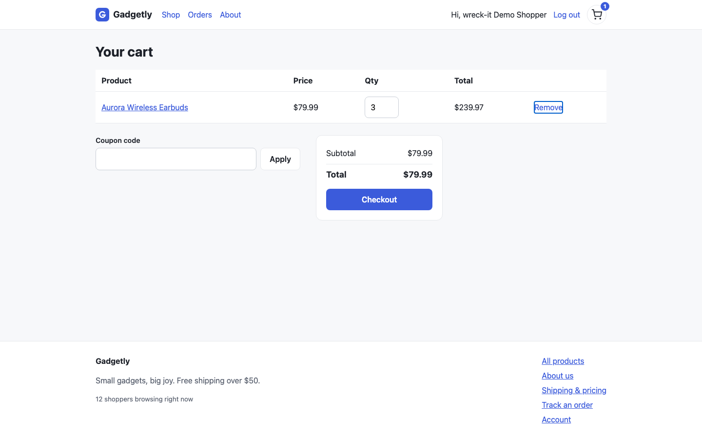
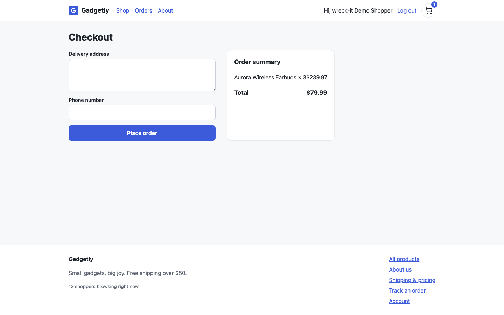

QA for local web apps
Wreck your app
before your users do.
Your coding agent. A focused QA workflow. Reproduced bugs with evidence.
wreck-it 0.2.001 / Set up
Start locally. Load the skills.
npx skills add miyannishar/wreck-it
npx @miyanishar/wreck-it setup
Run your app, complete setup, then restart your agent.
02 / Choose a flow
Focus on checkout.
/wreck focus checkout
Cart → Checkout → supporting APIs
Example prompt · record the real agent session for the final video
04 / Inspect the finding
Screenshot. Repro steps. Source.

WR-001 · high · functional
lib/cart.ts:19
sum + item.price
// corrected copy
sum + item.lineTotal
05 / Review the report and test
Verify the generated check.
expect(page.locator('.summary-total'))
.toContainText('$239.97')Buggy copy1 failedReceived: $79.99
Corrected copy1 passedReceived: $239.97
Same generated spec · zero skips · verified with the published CLI
Try wreck-it
Wreck your app
before your users do.
github.com/miyannishar/wreck-it
Seeded demo app · scripted replay
This preview pairs AI narration with verified screenshots and explanatory cards. The prompt card is a filming cue. The final cut still needs a real agent recording and the report walkthrough.